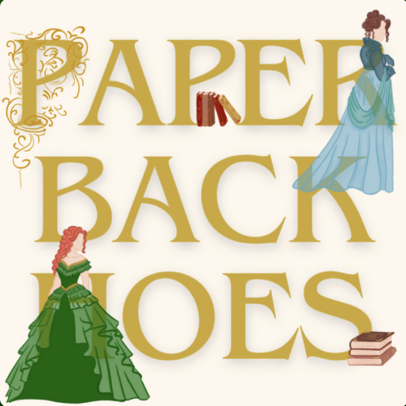
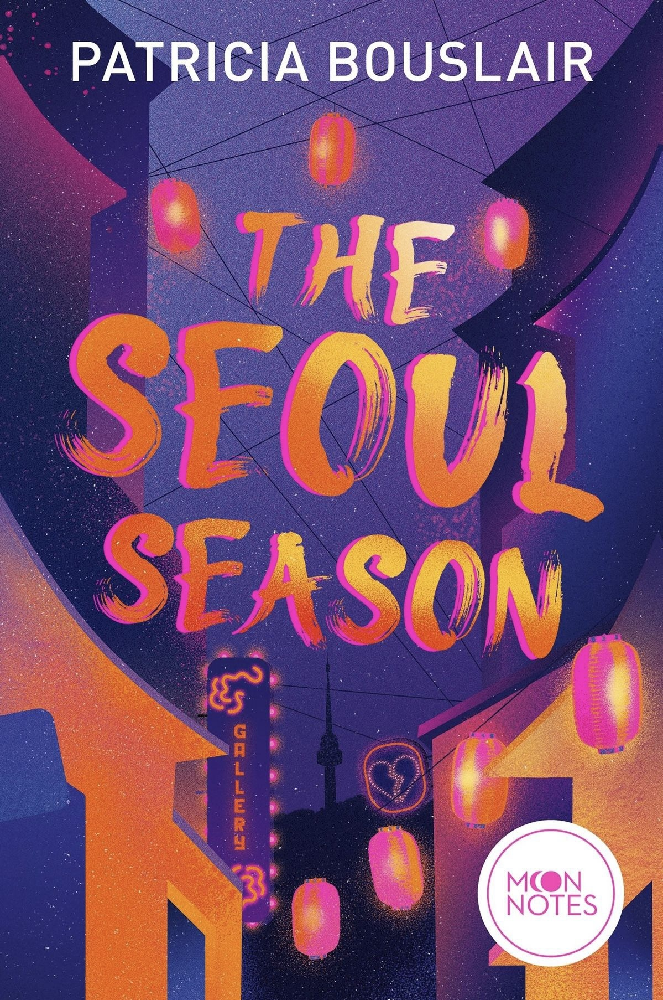

Paperback HoesPaperback Hoes started during the pandemic when Rachel and Laureen decided to turn their shared love of books into a podcast. What began as casual conversations about favorite reads quickly grew into a space where book lovers can discover new stories, discuss popular releases, and celebrate reading together.
Alongside book reviews and recommendations, we occasionally welcome special guests including authors who join us to chat about their books, writing journeys, and the stories that inspire them.
Join us as we chat with author Patricia Bouslair about her debut novel The Seoul Season. K-Dramas, art, love and even a little Hugh Grant, this episode has it all.

The novel follows Maya, a location scout working in Seoul, who discovers both artistic inspiration and unexpected love when she meets rising artist Jae-ho. As their connection deepens, a single lie threatens to unravel everything, forcing Maya to choose between the career she's worked for and the future she dreams of.
Catch up on some of our latest discussions.
Our favorite book recommendations inspired by beloved films.
Dragons, magic, romance, and everything we love about the romantasy genre.
A recap of our July, August, and September reads, favorites, surprises, and disappointments.